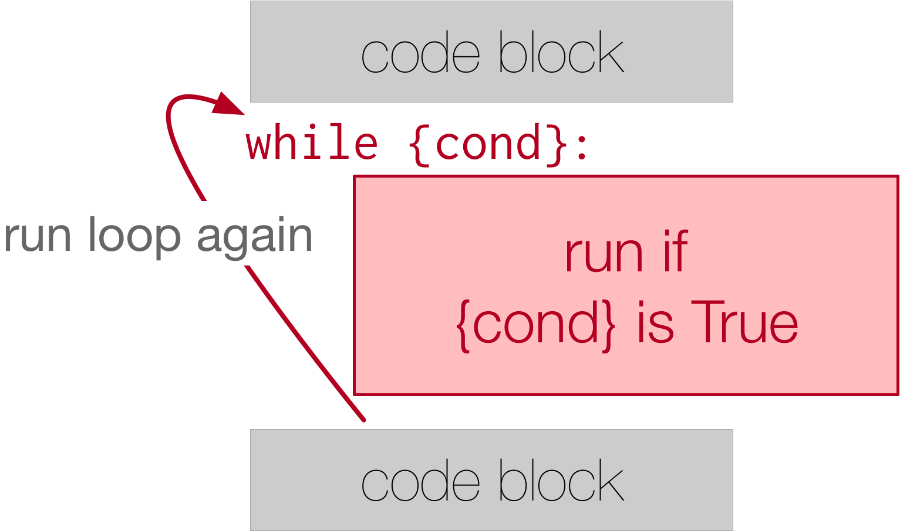

11.2. The while Statement¶
The while statement in Python provides a more general mechanism for iterating. Similar to the if statement, it uses
a boolean expression to control the flow of execution. The body of the while loop will be repeated as long as the controlling
boolean expression evaluates to True.
The following two figures show the flow of control. This shows the flow inside the while loop:

This shows the while loop in context:
We can use the while loop to create any type of iteration we wish, including anything that we have previously
done with a for loop. For example, we have seen programs that look like this when we learned about for loops:
Instead of relying on the range function to produce the numbers for our summation, we could use a while loop.
To do this, we will create a variable called aNumber and initialize it to 1, the first number in the
summation. Every iteration will add aNumber to the running total until all the values have been used. In order to
control the iteration, we must create a boolean expression that evaluates to True as long as we want to keep
adding values to our running total. In this case, as long as aNumber is less than or equal to the bound, we
should keep going.
Here is a new version of the summation program that uses a while statement:
You can almost read the while statement as if it were in natural language. It means, while aNumber is less
than or equal to aBound, continue executing the body of the loop. Within the body, each time, update theSum
using the accumulator pattern and increment aNumber. After the body of the loop, we go back up to the condition
of the while and reevaluate it. When aNumber becomes greater than aBound, the condition fails and flow
of control continues to the return statement.
The same program in codelens will allow you to observe the flow of execution.
Activity: CodeLens 11.2.4 (clens10_2_1)
Note
The names of the variables have been chosen to help readability.
More formally, here is the flow of execution for a while statement:
Evaluate the condition, yielding
FalseorTrue.If the condition is
False, exit thewhilestatement and continue execution at the next statement (after the body of the loop).If the condition is
True, execute each of the statements in the body of the loop and then go back to step 1.
The body consists of all of the statements below the header with the same indentation.
This type of flow is called a loop because the third step loops back around to the top. Notice that if the
condition is False the first time through the loop, the statements inside the loop are never executed.
The body of the loop should change the value of one or more variables so that eventually the condition becomes
False and the loop terminates. Otherwise the loop will repeat forever. This is called an infinite loop.
An endless source of amusement for computer scientists is the observation that the directions written on the back of
the shampoo bottle (lather, rinse, repeat) create an infinite loop.
In the case shown above, we can prove that the loop terminates because we know that the value of aBound is
finite, and we can see that the value of aNumber increments each time through the loop, so eventually it will
have to exceed aBound. In other cases, it is not so easy to tell.
Note
Introduction of the while statement causes us to think about the types of iteration we have seen. The for
statement will always iterate through a sequence of values like the list of names for the party or the list of
numbers created by range. Since we know that it will iterate once for each value in the collection, it is
often said that a for loop creates a definite iteration because we definitely know how many times we are
going to iterate. On the other hand, the while statement is dependent on a condition that needs to evaluate
to False in order for the loop to terminate. Since we do not necessarily know when this will happen, it
creates what we call indefinite iteration. Indefinite iteration simply means that we don’t know how many
times we will repeat but eventually the condition controlling the iteration will fail and the iteration will
stop. (Unless we have an infinite loop which is of course a problem)
What you will notice here is that the while loop is more work for you — the programmer — than the equivalent
for loop. When using a while loop you have to control the loop variable yourself. You give it an initial
value, test for completion, and then make sure you change something in the body so that the loop terminates. That
also makes a while loop harder to read and understand than the equivalent for loop. So, while you can implement
definite iteration with a while loop, it’s not a good idea to do that. Use a for loop whenever it will be known at
the beginning of the iteration process how many times the block of code needs to be executed.
Check your understanding
- True
- Although the while loop uses a different syntax, it is just as powerful as a for-loop and often more flexible.
- False
- Often a for-loop is more natural and convenient for a task, but that same task can always be expressed using a while loop.
True or False: You can rewrite any for-loop as a while-loop.
- n starts at 10 and is incremented by 1 each time through the loop, so it will always be positive
- The loop will run as long as n is positive. In this case, we can see that n will never become non-positive.
- answer starts at 1 and is incremented by n each time, so it will always be positive
- While it is true that answer will always be positive, answer is not considered in the loop condition.
- You cannot compare n to 0 in while loop. You must compare it to another variable.
- It is perfectly valid to compare n to 0. Though indirectly, this is what causes the infinite loop.
- In the while loop body, we must set n to False, and this code does not do that.
- The loop condition must become False for the loop to terminate, but n by itself is not the condition in this case.
The following code contains an infinite loop. Which is the best explanation for why the loop does not terminate?
n = 10
answer = 1
while ( n > 0 ):
answer = answer + n
n = n + 1
print(answer)
- a for-loop or a while-loop
- Although you do not know how many iterations you loop will run before the program starts running, once you have chosen your random integer, Python knows exactly how many iterations the loop will run, so either a for-loop or a while-loop will work.
- only a for-loop
- As you learned in section 7.2, a while-loop can always be used for anything a for-loop can be used for.
- only a while-loop
- Although you do not know how many iterations you loop will run before the program starts running, once you have chosen your random integer, Python knows exactly how many iterations the loop will run, so this is an example of definite iteration.
Which type of loop can be used to perform the following iteration: You choose a positive integer at random and then print the numbers from 1 up to and including the selected integer.
Write a while loop that is initialized at 0 and stops at 15. If the counter is an even number, append the counter to a list called eve_nums.
Below, we’ve provided a for loop that sums all the elements of list1. Write code that accomplishes the same task, but instead uses a while loop. Assign the accumulator variable to the name accum.
Write a function called stop_at_four that iterates through a list of numbers. Using a while loop, append each number to a new list until the number 4 appears. The function should return the new list.